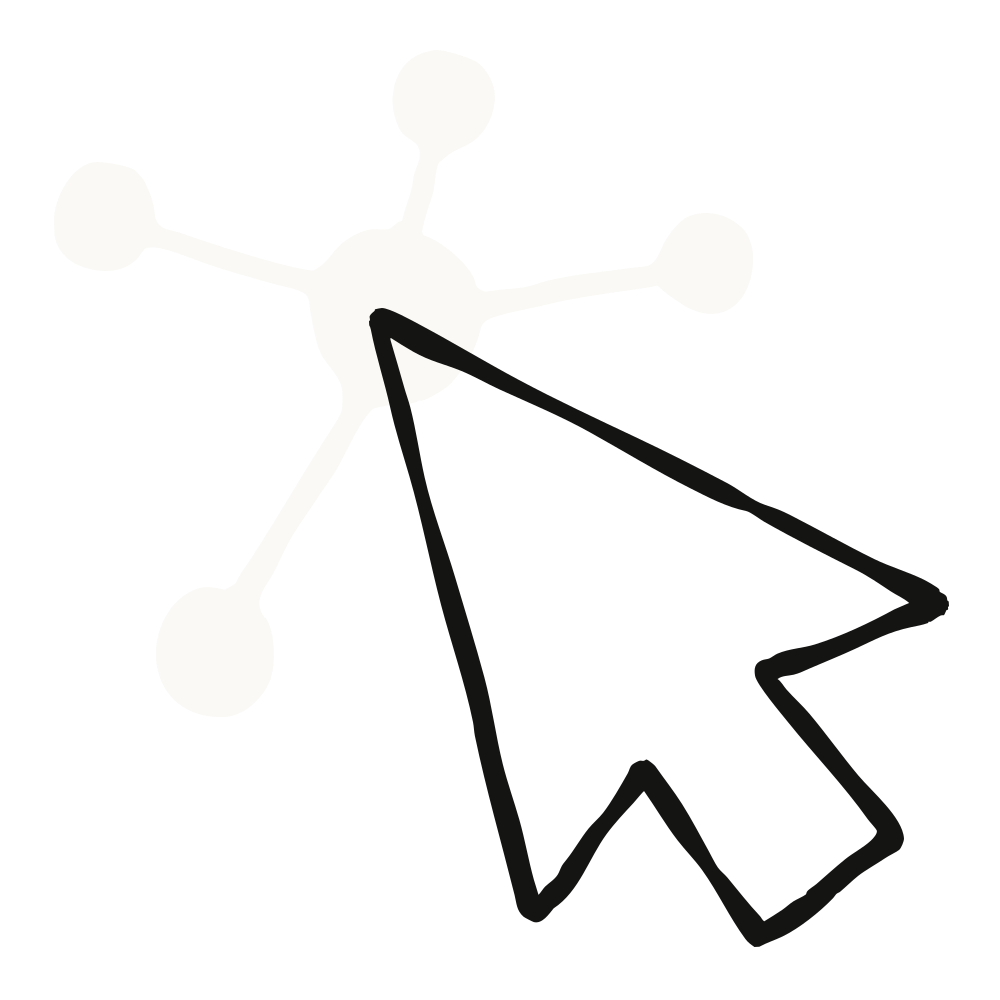

데스크톱 앱 안에서 Claude가 자기 브라우저를 직접 연다. 사이트를 돌아다니고, 페이지를 읽고, 클릭하고, 양식을 채운다. 확장 프로그램도, 별도 설정도 필요 없고, 내 브라우저에서 넘어가는 것도 내가 고르지 않는 한 없다.

한 줄 요약: 데스크톱 앱의 Claude Cowork에 브라우저가 들어왔다. 웹사이트를 써야 하는 작업이 생기면 사이드 패널에 브라우저가 열리고, Claude가 알아서 페이지를 넘나들며 읽고, 클릭하고, 입력한다. 나는 하던 일을 계속하면서 작업의 웹 부분만 떼어 넘길 수 있다.
Claude가 대신 해줄 수 있는 일로 원문이 든 예시는 이런 것들이다 — 양식(form) 채우기, 대시보드에서 숫자 뽑아오기, 커넥터가 없는 포털을 헤집고 다니며 일 처리하기.
지금까지 Cowork에서 Claude에게 웹을 쓰게 하려면 Claude in Chrome 확장 프로그램을 통해 내 브라우저에 접근 권한을 주는 것이 유일한 방법이었다. 이미 열어둔 페이지에서 해야 하는 일이라면 지금도 그쪽이 맞다. 하지만 원문의 표현을 빌리면, 웹 작업의 상당수는 내 브라우저가 필요한 게 아니라 그냥 브라우저 하나가 필요할 뿐이다. 이제 Claude에게 그 브라우저가 생겼다.
이번 주부터 Claude 데스크톱 앱의 Pro · Max · Team 플랜에 순차 배포된다. Enterprise 관리자는 오늘부터 조직에 켤 수 있다.
핵심은 이것이다 — 내 브라우저가 아니라 Claude의 브라우저다. 내장 브라우저는 내가 쓰는 브라우저와 완전히 분리돼 있고, Claude는 내 탭도, 북마크도, 비밀번호도 보지 못한다.
대신 내가 쓰는 사이트에 로그인 상태를 유지하고 싶다면 로그인 정보를 사이트 단위로 하나씩 넘겨줄 수 있다. 가져올 수 있는 출처는 다음과 같다.
다만 은행, 이메일, SSO(단일 로그인) 사이트는 기본적으로 제외된다. 내가 명시적으로 포함시키지 않는 한 넘어가지 않는다.
두 가지 웹 사용 방식의 차이도 여기서 갈린다.
이미 Claude in Chrome을 쓰고 있다면 그대로 계속 동작하고 기본값도 그쪽으로 유지된다. 쓰고 있지 않다면 Claude는 내장 브라우저를 쓴다. 언제든 설정(Settings) → Cowork → 선호 브라우저(Preferred browser)에서 바꿀 수 있다.
내장 브라우저 역시 브라우저에서 행동하는 모든 AI 에이전트와 똑같이 프롬프트 인젝션(prompt injection) 위험을 안고 있다. 페이지 안에 숨겨진 지시문이 Claude의 방향을 틀어놓으려 하는 공격이다.
여기에는 Claude in Chrome과 동일한 안전장치가 그대로 적용된다. Claude가 실행하려는 동작을 사용자가 원래 요청한 내용과 대조해 검사하는 장치도 포함된다. 자세한 설명은 Claude in Chrome 정식 출시 글에 정리돼 있다. (한글 정리: Claude in Chrome 정식 출시)
내장 브라우저는 앞으로 한 주에 걸쳐 Claude 데스크톱 앱의 Pro · Max · Team 플랜에 순차 배포된다. 지원 OS는 macOS · Windows · Linux(베타)다.
내 계정에 도착하면 기본값으로 켜져 있다. 웹사이트가 관련된 작업을 Claude에게 시키면 브라우저가 알아서 열린다.
Enterprise 플랜에서는 지금 바로 쓸 수 있고, 관리자는 조직 설정(Organization settings) → Cowork → 내장 브라우저(Built-in browser)에서 관리한다.
마지막으로 어디서 동작하는지 정리하면 이렇다.